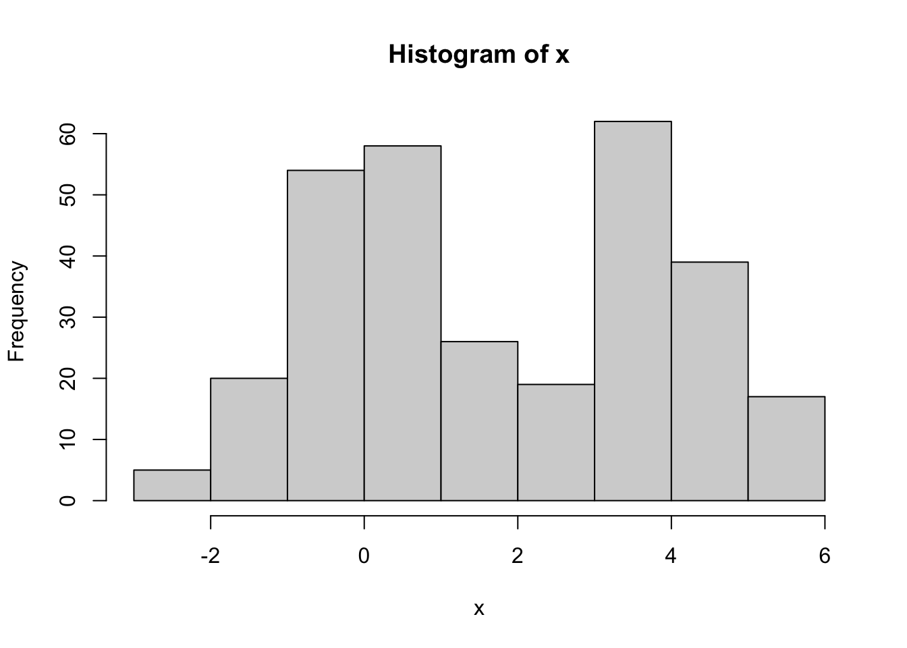
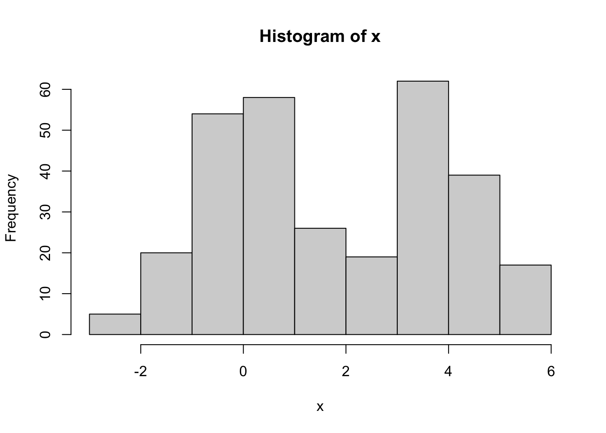

n <- 300
group_lambda <- c(0.5, 0.5)
group_mu <- c(0, 4)
group_sd <- c(1, 1)
z <- sample(c(1, 2), n, replace=T, prob=group_lambda)
x <- rnorm(n, mean=group_mu[z], sd=group_sd[z])
hist(x)
Suppose we observe data \(X_1,...,X_n\), and we assume that each observation \(i\) comes from one of \(k\) groups. Let \(Z_i \in \{1,...,k\}\) denote the group assignment. The one-dimensional Gaussian mixture model assumes that
\[P(Z_i = j) = \lambda_j \hspace{1cm} j \in \{1,...,k\}\]
and
\[X_i | (Z_i = j) \sim N(\mu_j, \sigma_j^2)\]
That is, the probability of belonging to group \(j\) is \(\lambda_j\), and the distribution of each group is Gaussian with its own mean \(\mu_j\) and variance \(\sigma_j^2\).
The code below simulates data from a Gaussian mixture model, with \(n=300\) observations and \(k=2\) groups. The group proportions are \(\lambda_1 = 0.5\) and \(\lambda_2 = 0.5\), and the group means and standard deviations are \(\mu_1 = 0\), \(\mu_2 = 4\), \(\sigma_1 = 1\), and \(\sigma_2 = 1\).
n <- 300
group_lambda <- c(0.5, 0.5)
group_mu <- c(0, 4)
group_sd <- c(1, 1)
z <- sample(c(1, 2), n, replace=T, prob=group_lambda)
x <- rnorm(n, mean=group_mu[z], sd=group_sd[z])
hist(x)
The challenge to estimating the parameters in the mixture model described above is that we don’t get to see the latent variable \(Z\)! Instead, we need to both try to guess the group assignments, while also estimating the parameters \(\lambda, \mu, \sigma\).
One method for fitting this model is with the EM algorithm (we will discuss the details of the EM algorithm later). For now, we will use R to fit the model and examine the results.
A Gaussian mixture model can be fit in R using the normalmixEM function from the mixtools package. Here is an example:
library(mixtools)
em_res <- normalmixEM(x, lambda = c(0.5, 0.5), k=2)number of iterations= 30 em_res$lambda[1] 0.562674 0.437326em_res$mu[1] 0.0702969 3.9302210em_res$sigma[1] 1.0178150 0.8590195We can see that the estimated parameters are pretty close to their true values!
Using the code above, simulate data with different values for \(\lambda\), \(\mu\), and \(\sigma\). How does changing each of these parameters change the shape of the histogram?
For different values of \(\lambda\), \(\mu\), and \(\sigma\), simulate data and estimate the model parameters with the EM algorithm. How does the quality of the estimates change as we change the model parameters?
If you look at the output from the normalmixEM function, you will see that the object contains an entry called posterior:
em_res$posterior |>
head() comp.1 comp.2
[1,] 0.990225443 9.774557e-03
[2,] 0.001205552 9.987944e-01
[3,] 0.005512293 9.944877e-01
[4,] 0.999999927 7.297096e-08
[5,] 0.999996993 3.007121e-06
[6,] 0.532292105 4.677079e-01What are these values? These are estimated posterior probabilities of belonging to each group. That is, \[\widehat{P}(Z_i = j | X_i)\]
Applying Bayes’ rule, these can be found as follows:
\[\widehat{P}(Z_i = 2 | X_i) = \dfrac{\widehat{\lambda}_2 f(X_i | \widehat{\mu}_2, \widehat{\sigma}^2_2)}{\widehat{\lambda}_2 f(X_i | \widehat{\mu}_2, \widehat{\sigma}^2_2) + \widehat{\lambda}_1 f(X_i | \widehat{\mu}_1, \widehat{\sigma}^2_1)}\] where \(f(x | \mu, \sigma^2)\) is the pdf of the \(N(\mu, \sigma^2)\) distribution. Then, since we are only considering \(k=2\) groups for now,
\[\widehat{P}(Z_i = 1 | X_i) = 1 - \widehat{P}(Z_i = 2 | X_i)\]
Using the estimated parameters for the Gaussian mixture model, calculate \(\widehat{P}(Z_i = 2 | X_i)\) for each observation in the data, and verify that these values agree with the second column of em_res$posterior. (The dnorm function may be useful here!)
Given \(\widehat{P}(Z_i = 2 | X_i)\), the estimated proportions \(\widehat{\lambda}_1\) and \(\widehat{\lambda}_2\) are calculated as follows: \[\widehat{\lambda}_1 = \frac{1}{n} \sum \limits_{i=1}^n \widehat{P}(Z_i = 1 | X_i) \hspace{1cm} \widehat{\lambda}_2 = \frac{1}{n} \sum \limits_{i=1}^n \widehat{P}(Z_i = 2 | X_i)\] Calculate these values, and confirm that they agree with em_res$lambda.
Given \(\widehat{P}(Z_i = 2 | X_i)\), the estimated means \(\widehat{\mu}_1\) and \(\widehat{\mu}_2\) are calculated as follows: \[\widehat{\mu}_1 = \dfrac{\sum \limits_{i=1}^n X_i \widehat{P}(Z_i = 1 | X_i)}{\sum \limits_{i=1}^n \widehat{P}(Z_i = 1 | X_i)} \hspace{1cm} \widehat{\mu}_2 = \dfrac{\sum \limits_{i=1}^n X_i \widehat{P}(Z_i = 2 | X_i)}{\sum \limits_{i=1}^n \widehat{P}(Z_i = 2 | X_i)}\] Calculate these values, and confirm that they agree with em_res$mu
Given \(\widehat{P}(Z_i = 2 | X_i)\), the estimated standard deviations \(\widehat{\sigma}_1\) and \(\widehat{\sigma}_2\) are calculated as follows: \[\widehat{\sigma}_1 = \sqrt{\dfrac{\sum \limits_{i=1}^n (X_i - \widehat{\mu}_1)^2 \widehat{P}(Z_i = 1 | X_i)}{\sum \limits_{i=1}^n \widehat{P}(Z_i = 1 | X_i)}} \hspace{1cm} \widehat{\sigma}_2 = \sqrt{\dfrac{\sum \limits_{i=1}^n (X_i - \widehat{\mu}_2)^2 \widehat{P}(Z_i = 2 | X_i)}{\sum \limits_{i=1}^n \widehat{P}(Z_i = 2 | X_i)}}\] Calculate these values, and confirm that they agree with em_res$sigma